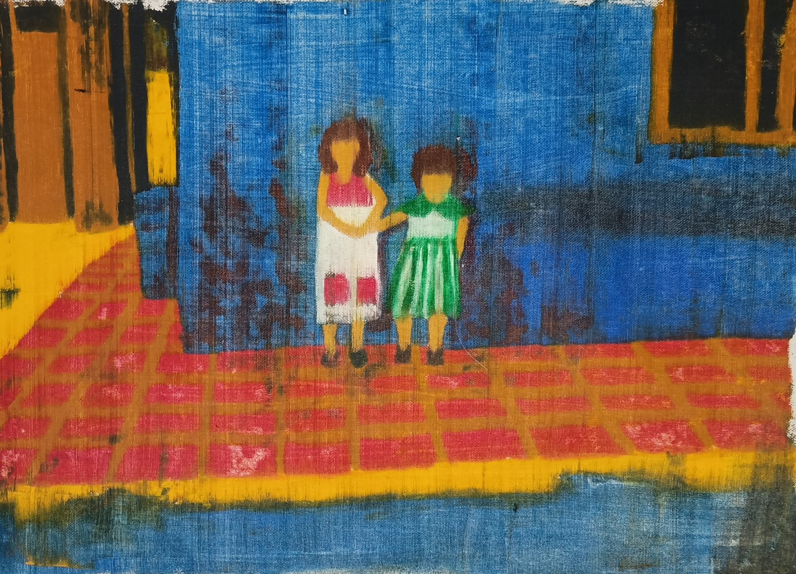
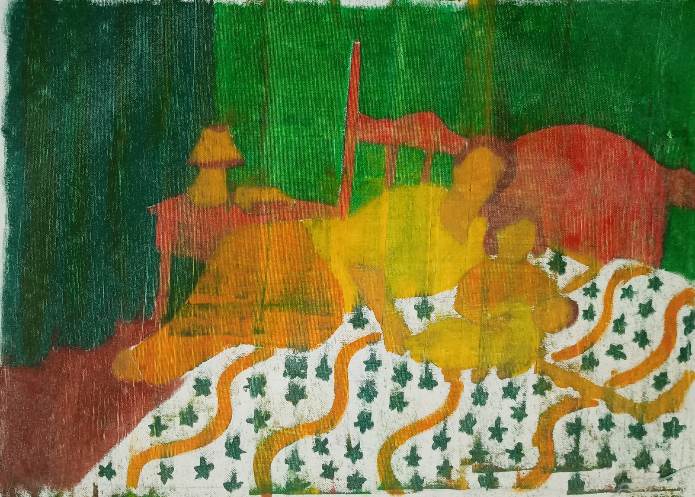
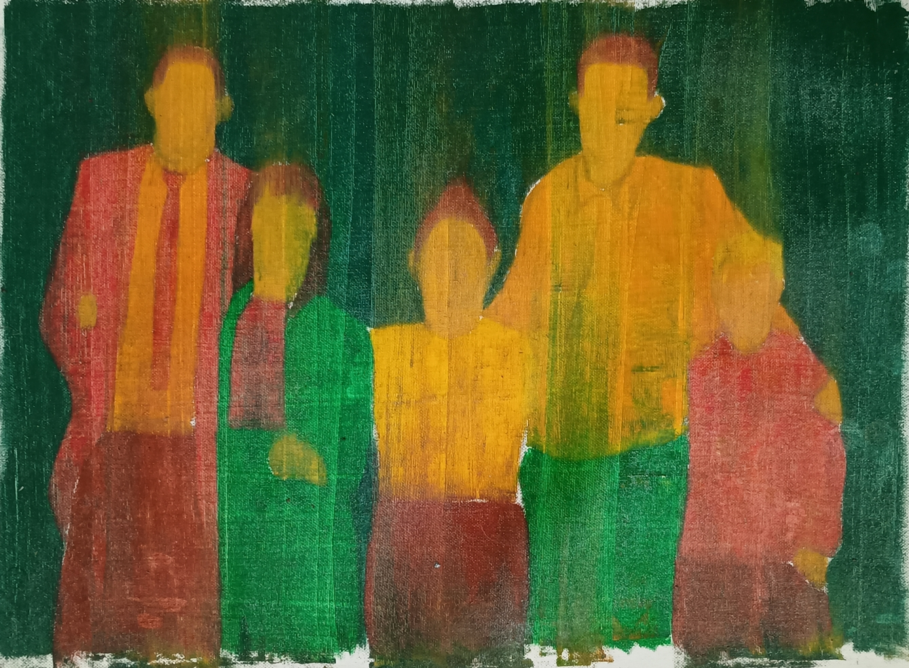
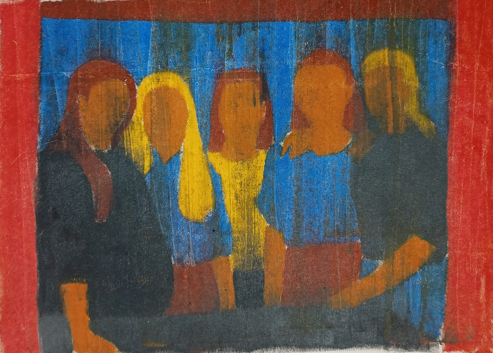
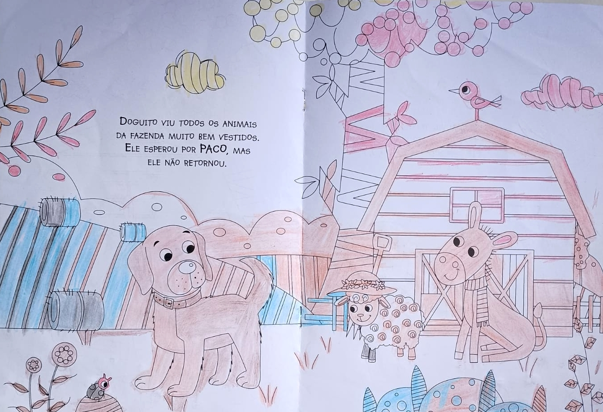
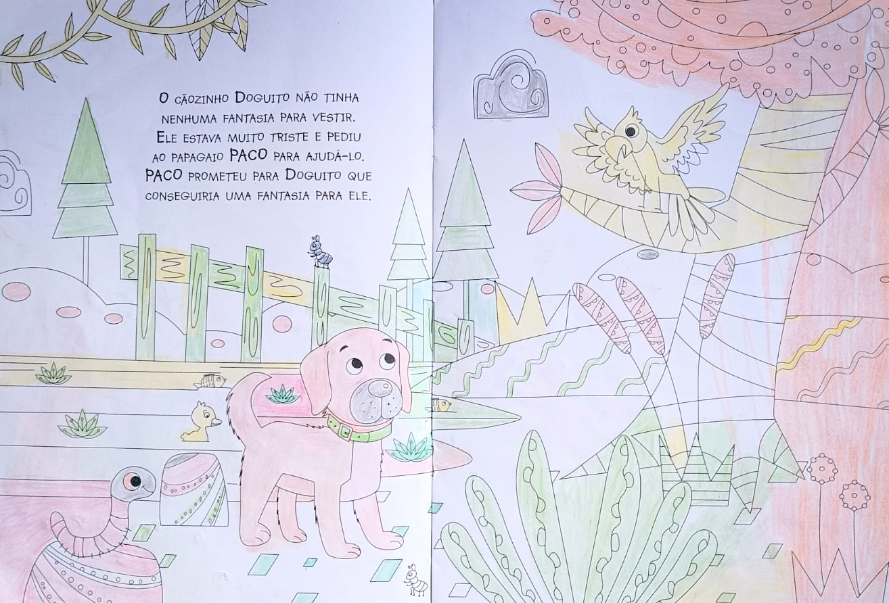
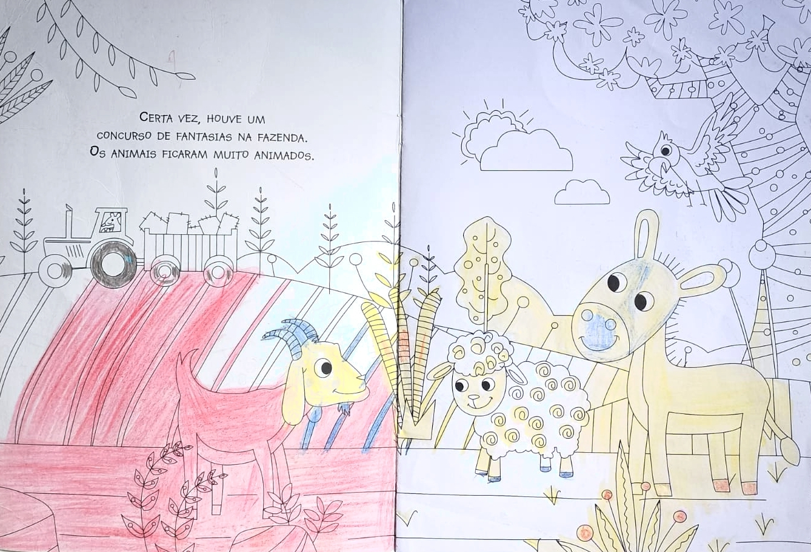
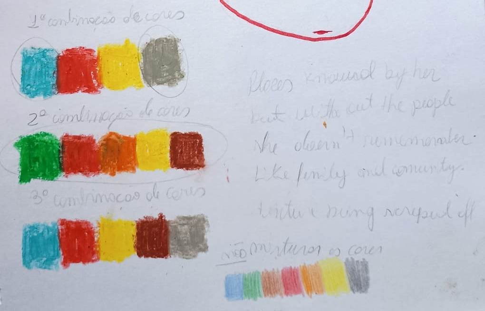
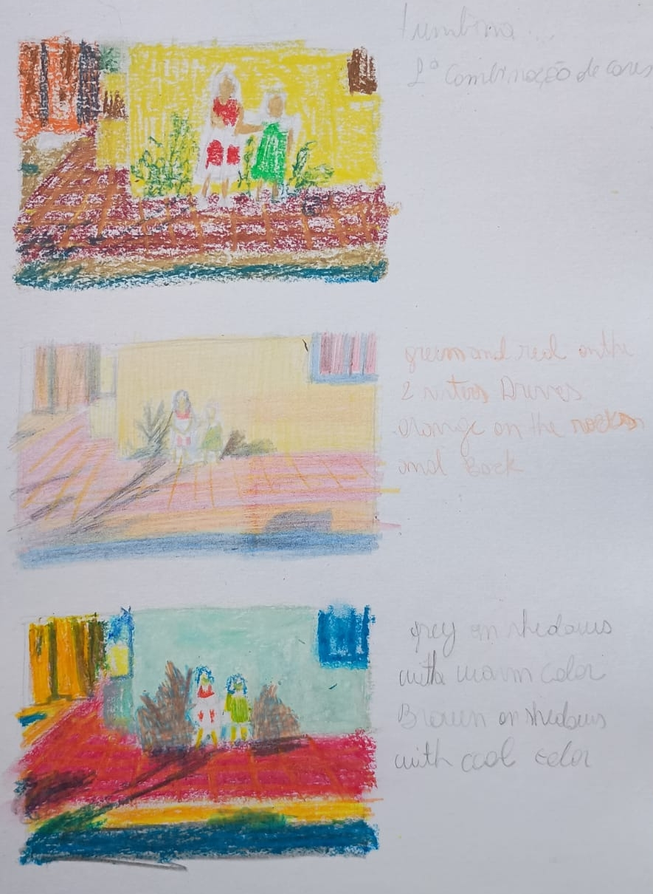
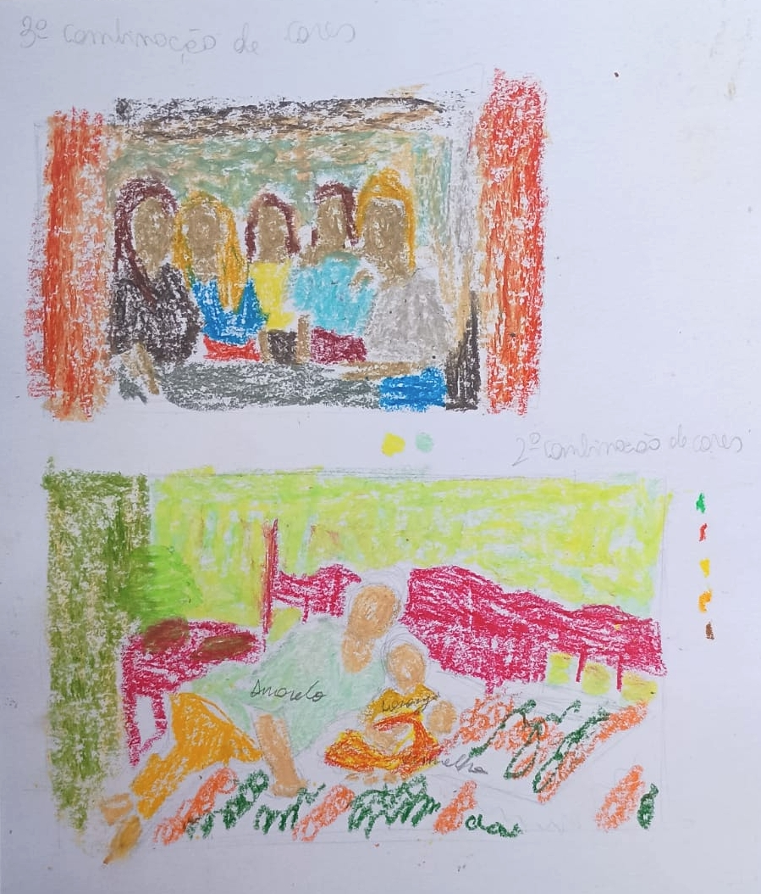

Diluição é uma coleção pessoal e poética de pinturas que explora a desintegração da memória causada pela doença de Alzheimer, através da experiência íntima do declínio cognitivo da minha avó. Este conjunto de obras reflete sobre o esquecimento não como uma ruptura repentina, mas como uma erosão lenta e silenciosa, que afeta nomes, lugares e, eventualmente, até rostos.
Cada pintura começa com uma fotografia de família, um ponto de referência enraizado na memória compartilhada. Mas, em vez de reproduzir essas imagens fielmente, eu intervenho através do ato de raspar a tinta com uma espátula, removendo camadas de pigmento para ecoar a perda de clareza e presença que define o Alzheimer. O ato é deliberado, metódico e irreversível, espelhando o desmantelamento incontrolável da identidade.
Um dos efeitos mais assombrosos da doença é a perda de reconhecimento, a incapacidade de se lembrar daqueles que nos são mais próximos. Em resposta, muitas dessas pinturas omitem ou desfocam intencionalmente as feições, permitindo que as figuras se desvaneçam na abstração.
A ausência de expressão torna-se uma metáfora visual para a ruptura emocional de ser esquecido e a dor profunda de ver um ente querido esquecer.A paleta de cores desta série é diretamente inspirada pela participação da minha avó na terapia de ativação cognitiva, durante a qual ela usava lápis de cor para colorir livros de colorir para adultos. Nessas páginas, suas escolhas: rostos azuis, céus vermelhos, cabelos verdes, muitas vezes não tinham relação com as cores “corretas” ou esperadas do mundo real. Em vez disso, refletiam uma mente desvinculada de associações lógicas. Adotei essa discrepância em meu trabalho, incorporando esses tons dissonantes como uma forma de homenagear seu mundo interior, onde a realidade começara a se desfazer, mas a verdade emocional ainda emergia de maneiras inesperadas.
A espátula torna-se tanto ferramenta quanto metáfora, raspando o que antes era inteiro, expondo texturas, contornos fantasmagóricos e resíduos emocionais subjacentes. Essas pinturas não tentam restaurar a memória, mas sim criar espaço para o seu desaparecimento. No ato de remoção, não busco o vazio, mas vestígios: de amor, tristeza, toque e tempo.
Através de When the Ink Fades, pretendo transformar o luto pessoal em linguagem visual, uma que permanece no espaço entre lembrar e esquecer, entre presença e ausência, e convida o espectador a testemunhar a silenciosa resistência da memória, mesmo enquanto ela se esvai.









